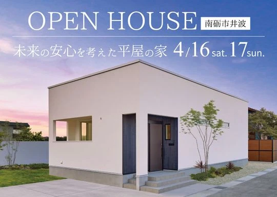
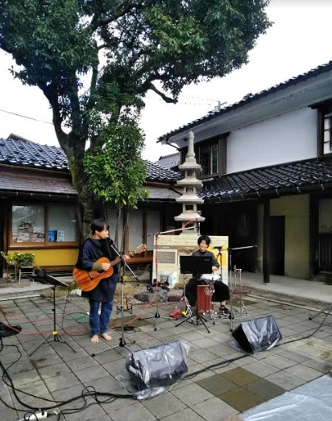
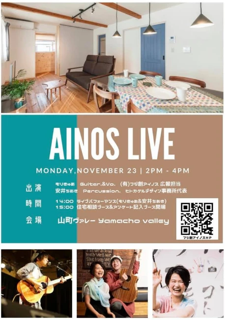
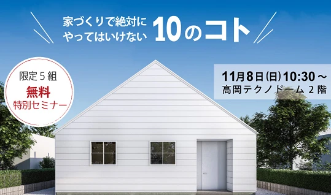
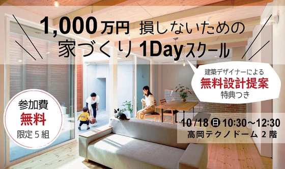
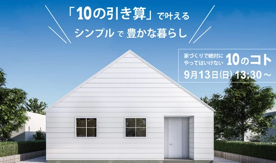
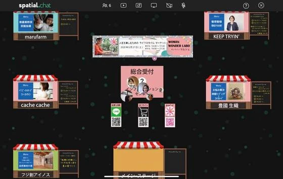
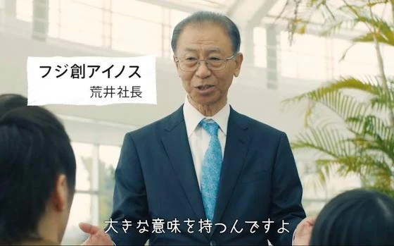

【射水市】他にはない体感できる見学会
こんにちは。富山で自然素材にこだわるホンモノの家、フジ創アイノスです。 4月29日（土）、30日（日）の2日間、5月3日(水・祝)～７日(日)射水市で完成見学会を開催します。 完成したばかりの新築一戸建て住宅を、お施主様
続きを読む →FUJISOU AINOS JOURNAL
家づくりのこと、暮らしのこと。
日々の想いを、お伝えします。
イベント 34件 ／ 新しい記事から 1・2ページ
こんにちは。富山で自然素材にこだわるホンモノの家、フジ創アイノスです。 4月29日（土）、30日（日）の2日間、5月3日(水・祝)～７日(日)射水市で完成見学会を開催します。 完成したばかりの新築一戸建て住宅を、お施主様
続きを読む →
こんにちは。富山で自然素材にこだわるホンモノの家、フジ創アイノスです。 いよいよ明日から完成見学会です！ ３０代のご夫婦が思いを込めて完成させた「平屋の家」です。 ・断熱性能が良く暖かい ・遮音性が高くて静か ・地震があ
続きを読む →
こんにちは。富山で自然素材にこだわるホンモノの家、フジ創アイノスです。 ３月２６、２７日に、高岡市内免にあるモデルハウス特別販売会を開催します！ アイノスオリジナル、自然素材の健康住宅で、2LDKタイプのコンパクトな家で
続きを読む →
こんにちは。富山で自然素材にこだわるホンモノの家、フジ創アイノスです。 明日から富山市山室で新築完成見学会が開催されます！ お施主様のご厚意でお借りした、限定5日間（完全予約制）の開催です。 お施主様は家づくりを進めるに
続きを読む →
こんにちは。富山で自然素材にこだわるホンモノの家、フジ創アイノスです。 2月26日（土）27日（日）の2日間、 高岡市中保に完成した「平屋の家」完成見学会を開催します。 【見どころ】 ■シンプルで快適な暮らしを実現した平
続きを読む →
こんにちは。富山で自然素材にこだわるホンモノの家、フジ創アイノスです。 10月30日（土）・31日（日）、11月6日（土）・7日（日）に富山市太田「完成見学会」＆「家づくり見学会」を行います。 お客様のご厚意により、完成
続きを読む →
こんにちは。富山で自然素材にこだわるホンモノの家、フジ創アイノスです。 土曜日、日曜日は高岡市内免でモデルハウスの見学会を開催します！ アイノスの家づくりのポイントをご紹介します。 ◆自然素材 「無垢の床材」「漆喰塗の壁
続きを読む →
こんにちは。富山で自然素材にこだわるホンモノの家、フジ創アイノスです。 7月24・25日に高岡市内免でオープンハウスを開催します。 その見どころを紹介します。 ◆自然素材 「無垢の床材」「漆喰塗の壁」「無垢材張りの壁」な
続きを読む →
こんにちは。富山で自然素材にこだわるホンモノの家、フジ創アイノスです。 フジ創ではOPENHOUSE-幸せづくり見学会-を開催しています 今回はこのネーミングについてご説明します。 １.幸せづくりとは 幸せは大きく分けて
続きを読む →
こんにちは。富山で自然素材にこだわるホンモノの家、フジ創アイノスです。 5月1日（土）・2日（日）は高岡市内免でモデルハウスの見学会を開催します。 １歩足を踏み入れた瞬間、『空気の違い』を全身で感じることができる自然素材
続きを読む →
こんにちは。富山で自然素材にこだわるホンモノの家、フジ創アイノスです。 先日行ったアイノスライブに、たくさんの方にお越しいただき本当にありがとうございました！ 山町ヴァレーの中庭でライブを、和室では住宅相談を行いました。
続きを読む →
こんにちは。富山で自然素材にこだわるホンモノの家、フジ創アイノスです。 11/23㈪はアイノスライブです！ アイノススタッフのもりきゅあによるライブパフォーマンス、書道家の安井ちあきさんの書道パフォーマンスをぜひご覧くだ
続きを読む →
こんにちは。富山で自然素材にこだわるホンモノの家、フジ創アイノスです。 これまでご紹介してきたSIMPLE NOTEの平屋のお家が、高岡市に完成しました。 11/28.29、12/5.6の4日間、完成見学会を開催します。
続きを読む →こんにちは。富山で自然素材にこだわるホンモノの家、フジ創アイノスです。 11/23㈪山町ヴァレーにて、ライブ＆住宅イベント「AINOS LIVE 」を開催いたします。 フジ創アイノスのスタッフ「盛崎克己」のイケ男カンバニ
続きを読む →
こんにちは。富山で自然素材にこだわるホンモノの家、フジ創アイノスです。 11/8㈰高岡テクノドームにて、特別セミナー「家づくりで絶対にやってはいけない10のコト」 を開催いたします。 多くの人が失敗してしまう「１０のコト
続きを読む →
こんにちは。富山で自然素材にこだわるホンモノの家、フジ創アイノスです。 10/18㈰に、1,000万円損しないための家づくり１Dayスクールを開催します。 家づくりに掛かる建築費は、同じ坪数・間取りであっても、 考え方や
続きを読む →
こんにちは。富山で自然素材にこだわるホンモノの家、フジ創アイノスです。 急に涼しくなりました。 明日から4連休、楽しみですね。 土曜日曜はモデルハウスの見学会です。 無垢床、しっくい壁の自然素材の家。 家族の健康を考えた
続きを読む →
こんにちは。富山で自然素材にこだわるホンモノの家、フジ創アイノスです。 9月13日㈰高岡テクノドームにて、大好評セミナー『家づくりで絶対にやってはいけない10のコト』を開催いたします。 ①最初に考える「今だけ」を考えない
続きを読む →こんにちは。富山で自然素材にこだわるホンモノの家、フジ創アイノスです。 9/13㈰に開催される大好評セミナー、ご予約受付中です。 ５組限定ですのでお早めにご連絡ください(^^) ↓ご予約フォーム https://www.
続きを読む →9月13日㈰高岡テクノドームにて、大好評セミナー『家づくりで絶対にやってはいけない10のコト』を開催いたします。 ①最初に考える「今だけ」を考えない家づくり ②「土地探し」を不動産屋さんに任せてはいけない理由 ③「要望」
続きを読む →
こんにちは。富山で自然素材にこだわるホンモノの家、フジ創アイノスです。 ８月２２日（土）、２３日（日）に高岡市内で完成見学会を開催します。 皆様の家づくりの参考にしていただきたく、施主様より２日間お借りしました。 町中の
続きを読む →
こんにちは。富山で自然素材にこだわるホンモノの家、フジ創アイノスです。 明日7/19（日）は完成見学会です。 まだご予約受け付けております。 自然素材、しっくい塗壁の心地よい家をぜひご体感ください。 今回のオーナー様は空
続きを読む →
こんにちは。富山で自然素材にこだわるホンモノの家、フジ創アイノスです 「家の中からでも参加できる」 本日はWoman Wonder Laboさん主催のオンラインマルシェが開催され 講師の方やお店の方がウェブ店舗として参加
続きを読む →
▼ショールームで家づくり相談 フジ創アイノスでは予約制で無料相談会を実施しています。 可愛いショールームで家づくりのお悩み相談にお応えします。 資金計画のシュミレーションをはじめ、将来を見据えた家づくりを提案致します。
続きを読む →